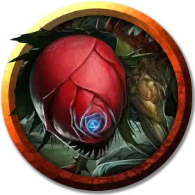

Выплодок
Podling
Среднее Растение

Класс Доспеха 10
Хиты 26 (4к8 + 8)
Скорость 20 футов
| мод | спас | ||
|---|---|---|---|
| СИЛ | 15 | +2 | +2 |
| ЛОВ | 11 | +0 | +0 |
| ТЕЛ | 14 | +2 | +2 |
| мод | спас | ||
|---|---|---|---|
| ИНТ | 10 | +0 | +0 |
| МДР | 10 | +0 | +0 |
| ХАР | 10 | +0 | +0 |
Иммунитет к состояниям испуг, очарование
Чувства слепое зрение 30 футов, пассивное Восприятие 10
Языки Глубинная речь
Опасность 1/2 (100 опыта)
Бонус мастерства +2
Особенности
Языки. Глубинная речь, языки, которые существо знало при жизни.
Подобие жизни. Выплодок — это физическая копия существа, переваренного телоглотом [bodytaker]. У выплодка есть воспоминания переваренного существа, и он ведет себя так же, как это существо, но со случайными оплошностями. Наблюдатель, знакомый с переваренным существом, может распознать несоответствия при успешной проверке Мудрости (Проницательность) Сл 20 или автоматически, если выплодок делает что-то прямо противоречащее сложившимся убеждениям или поведению переваренного существа. Выплодок превращается в кашицу, когда он умирает, когда умирает телоглот [bodytaker], создавший его, или когда телоглот освобождает его (никаких действий не требуется).
Необычная природа. Выплодок не нуждается во сне.
Действия
Удар. . Рукопашная атака оружием: +4 к попаданию, досягаемость 5 фт.,одна цель. Попадание: 5 (1к6 + 2) дробящего урона.
Описание
Телоглоты [bodytaker] либо захватывают ничего не подозревающих жертв своими лозами, либо поглощают пленников, которых им приносят их слуги-выплодки. В любом случае, они втаскивают существ в свой центральный плод, где мощные химические вещества приводят пленника в коматозное состояние. В течение нескольких часов существо растворяется, а его тело превращается в выплодка-дубликата.
Выплодки — почти идеальная имитация существ, которых они заменяют. Несмотря на знания тех, кому они подражают, выплодки зачастую упускают нюансы взаимодействия между разумными существами. Эти дубликаты оправдывают свое странное поведение, но те, кто знаком с человеком, замененным выплодком, часто могут сказать, что что-то не так. Совершите бросок по таблице "Поведение выплодка", чтобы увидеть, какое необычное поведение может быть у выплодока.
Поведение выплодка
| к6 | Поведение |
| 1 | Выплодок отказывается от привычек и увлечений существа, которому он подражает. |
| 2 | Выплодок проявляет любовь к растениям и относится к комнатным цветам с чрезмерной симпатией. |
| 3 | Выплодок с удовольствием подставляет свою кожу солнцу. Он отвергает одежду и волосы. |
| 4 | Выплодок часто ведет себя так, как будто с ним говорит какая-то невидимая сила, смотрит вдаль или кивает. |
| 5 | Выплодок часто общается с другими выплодками, используя Глубинную речь. |
| 6 | Выплодок больше не понимает нюансов отношений, устройства мира или способов использования инструментов. |